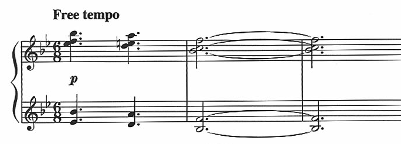
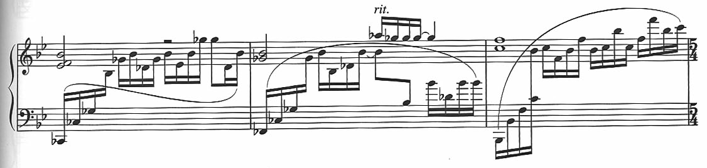
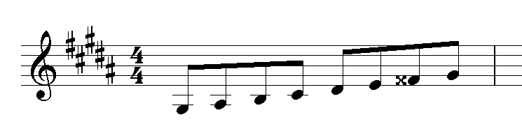

升降記號
音符 (note) 的 升 (sharp, #)、降 (flat, b) 記號代表著音符改變的方式，每次改變是以 半音 (semi-tone) 為單位。有朋友問我，為什麼要說 Eb 調，而不說 D# 調? 或者什麼時候該說 Eb 調? 什麼時候該說 D# 調?
升降音的基本意義
從大範圍的視角來看，像是歌曲段落之間的視角，升降是一種相對的概念，升記號暗示著音符由低往高升，通常表示情緒向上，變的更加激情，亢奮，high … 等；反之，降記號就是代表由高往低降，通常表示情緒往下沉，變的更低落，失望 … 等.
小範圍的角度來看，像是音符跟音符之間關係/互動，升降記號的概念有點類似於吉他的垂勾技巧，升記號就類似於 搥弦 (Hammer-on)，是讓音符往上移動的技巧。反之，降記號就相對於 勾弦 (Pull-off).
所以這提到了一個很重要的關鍵，就是 起始音符 (begin note) 到目標音符 (target note) 的過程，升降記號代表著由上往下，或者由下往上。聽起來有點像繞口。舉例來說:
- Eb: 使用降記號，所以表示是由上往下的概念，可能是 E -> Eb.
- F#: 使用升記號，所以表示是由下往上的概念，可能是 F -> F#
所以這是基本定義。
調號與臨時記號
調號 (Key Signature) 也就是五線譜上高低音譜表上升降記號數，也就是一般流行歌曲的 Key，他代表整個歌曲大範圍的調性，如下圖 (From Memorizes of Lightwave) 有兩個降記號，調號為 Bb or Gm 調:

“臨時記號” 代表一小節以內臨時的變化。但是要留意原本調號已經改變的音符。如下圖: (From Memorizes of Lightwave) 表 Bb or Gm 調裡，小節裡有一些音符作了暫時性的變化，譜中第一小節改變的有: Cb、Gb、Db

上述中的 Cb 不寫 B，因為 B 的位置，在譜上表示 Bb 這個音.
如果你是一個軟體工程師 (software developer)，那麼這樣說就容易懂了:
- 調號: 全域變數 (global variable)
- 臨時記號: 區域變數 (local variable)
That’s all。:D
重升與重降記號
重升記號 (Double Sharp) 一般用 ‘x’ 表示，像是 Ax，表示連續升兩個半音。所以 Ax 可以等於 B。但是意義上可能不太一樣.
重降記號 (Double Flat) 則用兩個降記號表示，像是 Abb，表示連續降兩個半音，Abb 可以等於 G。為了方便閱讀它們通常都會被上標.
最常見的例子就是減七和弦 (Diminished Seventh) 的音程表示:
- Xdim7: 1 b3 b5 bb7
減七和弦的由來可以這樣解釋，從大七和弦開始:
- Xmaj7: 1 3 5 7
- X7: 1 3 5 b7 or Xm(Maj7): 1 b3 5 7
- Xm7: 1 b3 5 b7
- Xm7-5: 1 b3 b5 b7
- Xdim7: 1 b3 b5 bb7
簡單說是有一些先後關係的.
有些書會把減七和弦的音成關係寫 1 b3 b5 6，嚴格講這是不對的。這邊的 bb7 意義上是如同本文第一段描述的基本定義，升降記號代表著 起始音符 (begin note) 到目標音符 (target note) 的過程，所以這邊雖然大七度連續降了兩次，但是這個和弦是由七和弦改變而來的結果，所以理解上我們依舊用原本七和弦 (Seventh Chord) 來命名，表示這個即使經過了這麼多變化，還是具備七和弦的血統.
以音程的概念來說，減七和弦其中的兩個 b5，bb7 分別都是代表減音程 (Diminished) 的概念:
- b5: 完全五度 (P5) -> 減五度 (dim5)
- bb7: 大七度 (M7) -> 小七度 (m7) -> 減七度 (dim7)
另外會出現這種重升降的地方，就是在一些調號不是 C/Am 的歌曲裡，像是和聲小調裡，要把自然小調音階第七個音升半音，為了要表示這個 “升” 的概念，加上如果本來的第七個音已經標升號了，這時候就會用到重升記號了。如下圖，為 G# 和聲小調音階:

G# 小調 (B 大調)，本來已經有五個升記號，第七個音原本為 F#，必須再升一次形成和聲小調。所以會變成 Fx，不寫 G 因為調號上 G 本來就要升，不用本位記號，因為本位記號無法表達出和聲小調第七個音要升的意圖.
同音異名
只要提到音程概念，有時候就會遇到這樣的問題:
我: “B 升半音是啥?”
同學 A: “升 B 阿” 同學 B: “不對，就是 C 啦!!~~”
同學 A 的回答錯嗎? 當然也對，只是是否適切而已.
問題也常會換成: “E 升半音是啥? " 或者 “F 降半音是啥?”
前述的例子中已經出現 Cb 這樣的音符了，它的意義從上述調號和臨時記號的關係應該不難理解.
歌曲例子: 梁靜茹 - 誘惑的街 (原唱林憶蓮)
這首歌曲轉很多調：
- Key: D -> B -> D -> D# -> E
- 五線譜的調號寫法: D -> B -> D -> Eb -> E
五線譜為了表示和書寫排版的便利，所以選擇用五度圈左右的調性來表示。D# 調有很多升記號，有多少? 可以看這個表: 五度圈順階和弦表。改用 Eb 調號表示就只有三個降記號，一目了然.
另外藍調與調式歌曲調號的選擇，這在藍調裡似乎不是那麼重要，但是如果會應用到調式，那麼就相當重要了。類似的基本概念請參閱 “怎樣練一首歌” 的調號，另外 “五聲音階與調式音階的關係” 也有一些類似的想法，有興趣的朋友可以參考看看.
升降記號書寫位置
升降記號一般書寫，升記號用 “#"，降記號用 “b” 表示，大部分會上標。描述音名的時候，老外唸法是 A Flat，F Sharp，所以大部分也都習慣性依照老外的念法，將升降記號放在音名的右邊，也就是: Ab，F#
如果描述音程、唱名、級數，也就是數字 1、2、3 … 7，等，我習慣以中文念法，先升降記號，然後再放上數字，也就是: b6、#4。台灣的樂譜專業出版社 - 卓著 - 也大致上是這樣標示的。不過他們的和弦把升降記號放後面 (ex: 6bm)，旋律則放前面.
五線譜上的表示法則是和數字級一樣，把升降記號放在音符的前面.
上數是大部分的慣例，現在網路資訊發達，有時候也會看到一些譜把升降記號全部都放音符，數字的前面，或者後面。實際上我個人覺得沒有對或錯，只要能夠看到懂就好。只是當一堆十六分音符寫在一起時，要先弄清楚升降記號的位置意義，才不會造成閱讀溝通上的誤會.
結論
升降記號實際上有兩個層面的意義，一個是實際音樂上的意義，一個是屬於樂譜呈現的意義。當然吉他手比較不在乎五線譜呈現的意義，因為如果只看六線譜，是不會發現有這個問題的。可是如果是鍵盤手，這就是一個必須要知道的概念.
但是如果要分析歌曲，對於這種升與降的用法，的改變，必須要能夠透過耳朵或者樂譜判斷出來，這樣如果要分析進階的理論，才會有基本的依據.
延伸閱讀
站內資料
- 五度圈
- 五度圈順階和弦表
- 怎樣練一首歌
- 減七和弦 (Diminished Seventh)
- 小調音階
- 五聲音階與調式音階的關係
- 歌曲分析 - Memorizes of Lightwave
更新紀錄
- 原文位址：https://rickmidi.blogspot.com/2010/06/blog-post.html
- 2010/06/19: 初版
- 2021/09/04: 搬移新站